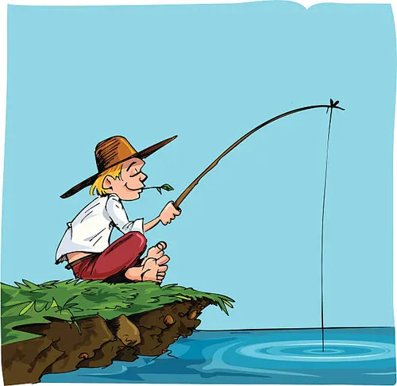
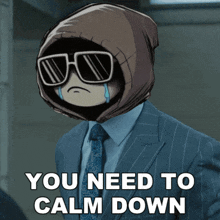

a Propos
Je suis actuellement en Form
Mes Soft Skills :
Patient
La patience et une vertue que je sais maitriser.
Autodidacte
Apprendre avec les ressource mis a disposition sur intenet ma permis d'accroitre mes compétence.

Calme
Je sais rester calme dans des moment de stress pour reflechir ensuite de façon methodique.
Realisation
A remplir
Technologie
A remplir